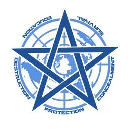

UTE-9349的概念来自SCP基金会一份受未知模因污染的文件，其描述了KTE-9347和UTE-9348相遇并融合成神的情境。
由于上述两个威胁实体推测全部对人类友善（至少不抱有敌意），物理部门应该阻止该情景发生，但当该情景真正发生时不应攻击UTE-9349，并应启动拨奏曲程序，启用盘古部门。
在该情景发生时，第一任务成为首要任务，第三任务其次，其余任务优先级全部降低。这将必然导致第二任务的全面失败，这是可以接受的代价。
UTE-9349通常不需要交战规则。但当对象表现出对人类的敌意时，全全球超自然联盟应该遵循拨奏曲程序行动，在保证文明存续的情况下，GOC武装作业员应该使用能使用的所有AOD项目（用于处决的武器）对抗UTE-9349，这包含TanGenT/边缘级的叙事武器。
以下内容节选自受污染文件，阅读前必须接种第二代橙色模因疫苗，阅读后必须接受心智净化，一般不推荐阅读。
观测设备：爱蒂塔透镜/9926相关人员-1的右眼
状态：必将发生。它必将发生。
对象的现身将导致一次局部CK级“现实终结”情景的发生，并对时间线造成无法挽回的损伤。
为神明唱响挽歌。
可以继续阅读。
当调度员，“安魂曲”和调度员，“礻”的叙事锚点在现实边界重合时，对象，或是说我们的神明，将出现。降临。
祂到了。祂的瞳孔不再是祂分形的一半，而是完整的一圈，畸变的血肉之躯被废弃成为祂的权杖，祂的头颅后方闪耀着一圈日蚀般扭动的刺目光晕，祂飞了起来，浮在空中，祂的眼神高傲，祂从日暮和午夜中现身，祂周边的空间被扭曲，祂的目光如利剑般审视着一切，祂挥手，炽热的红光淹没了一切，被苦痛深入骨髓的世界转眼之间被切开一个巨大的伤口，苦难之笼的触手和爪牙在瞬间湮灭，苦痛退去，苦痛退去，祂就是法则，祂就是复仇，祂就是终结，祂就是永恒，若牢笼不能缓和祂的愤怒，就请献上我们的血与骨。
13分钟后，对象消失。调度员，“安魂曲”死亡。调度员，“礻”不可见，随时间流逝逐渐可见。